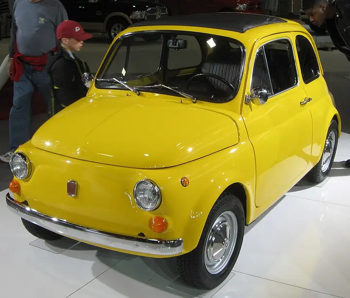

Fiat 500
Fiat 500 (2007) · 2007–2025
Abstract
This generation of the Fiat 500 is a city car (A), built 2007–2024 (Poland) in Poland: Tychy (Fiat Auto Poland), Mexico: Toluca (Toluca Car Assembly), Algeria: Tafraoui (Stellantis Tafraoui). Body styles: 3-door hatchback, 2-door cabriolet. Layout: Front-engine, front-wheel drive. Designed by Centro Stile Fiat:, Roberto Giolito (concept), Frank Stephenson (production) with Flavio Manzoni.

_02.JPG){kind=link}
1Specifications
| Production | 2007–2024 (Poland)2011–2019 (Mexico)2023–2025 (Algeria) |
|---|---|
| Model years | 2007–20252012–2019 (US/Canada) |
| Assembly | Poland: Tychy (Fiat Auto Poland)Mexico: Toluca (Toluca Car Assembly)Algeria: Tafraoui (Stellantis Tafraoui) |
| Designer | Centro Stile Fiat:Roberto Giolito (concept)Frank Stephenson (production) with Flavio Manzoni |
| Class | City car (A) |
| Body style | 3-door hatchback2-door cabriolet |
| Layout | Front-engine, front-wheel drive |
| Platform | Fiat Mini |
| Engine | Petrol:0.9 L TwinAir turbo I21.0 L GSE FireFly I3 mild hybrid1.2 L FIRE I41.4 L FIRE Multiair I41.4 L FIRE TurboJet I4Diesel:1.3 L MultiJet I4 |
| Transmission | 5-speed manual6-speed manual5-speed Dualogic automated manual6-speed automatic (Aisin) |
| Wheelbase | 2300 mm |
| Length | 3546 mm |
| Width | 1627 mm |
| Height | 1488 mm |
| Weight | 865–980 kg (Global)1072–1149 kg (US) |
| Related | Fiat Panda (169)Ford KaLancia Ypsilon (846) |
| Predecessor | Fiat 500Fiat Seicento/600 |
| Successor | Fiat 500e |
2Versions
- 500C (since 2009)
- Abarth 500 (since 2008)
- Abarth 595
- Fiat 500e (2013)
- Third-party conversion and concept history
- Availability
- 500 Start&Stop
- 500 PUR-O2 (2008–)
- 500 by Diesel (2008–2009)
- 500 Aria (2008)
- Ferrari edition (2008)
- Felipe Massa version (2008)
- Barbie version (2009)
- Pink (2010)
- BlackJack (2010)
- 500 by Gucci (2011–)
- 500 "America" (2012)
- Fiat 500 Vintage 57/1957 Retro edition (2015)
- Fiat 500 Ron Arad Edition
- 500 Riva (2017)
- 500 Dolcevita (2019)
- Fiat 500 Coupé Zagato concept (2011)
- Zender Abarth 500 Corsa Stradale concept (2013)
- 500e concepts (2022)
- Abarth 500 Opening Edition
- Abarth 500 Assetto Corse
- Abarth 695 "Tributo Ferrari" (2009)
- Abarth 500 SpeedGrey (2009)
- Abarth 500 "Cabrio Italia" (2011)
- Abarth 695 Competizione (2011)
3Previous generations
